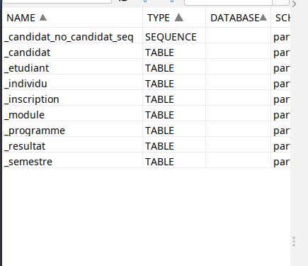
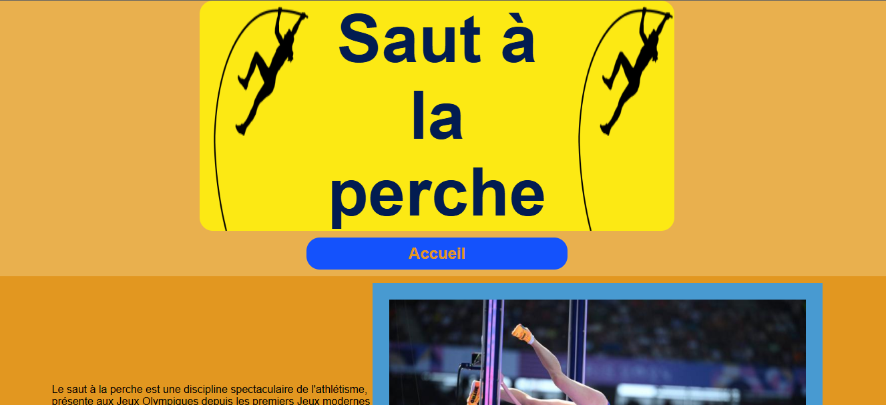

Mes projets
En entreprise – Stage développeur web & logiciel
Sofop Taliaplast – Montoir-de-Bretagne (avril – juillet 2026)
Stage réalisé pendant ma 2e année de BUT Informatique, au sein d'une entreprise industrielle. J'ai travaillé sur plusieurs projets autour de ses applications internes :
- modernisation et refonte d'applications internes en PHP / SQL ;
- conception et optimisation de l'interface utilisateur (HTML, CSS/SCSS, JavaScript) ;
- gestion de bases de données et maintenance applicative.
PHPSQLHTMLCSS / SCSSJavaScript
Lire le retour de l'entrepriseProjets de BUT Informatique, par UE
Projets réalisés à l'IUT de Lannion (2024 – 2026).
UE1 – Développement d'application
Snake
J'ai réalisé un snake. Si vous connaissez le jeu snake, c'est un jeu qui nécessite de récupérer des pommes en déplaçant un serpent, tout en esquivant les obstacles ! Nous avons utilisé pour ce projet le langage de programmation « C ».

UE2 – Optimisation d'applications
Snake autonome
J'ai réalisé un snake autonome. Si vous connaissez le jeu snake, c'est un jeu qui nécessite de récupérer des pommes en déplaçant un serpent. Ici, en l'occurrence, vous n'avez pas besoin de déplacer le snake car il est autonome ! Nous avons utilisé pour ce projet le langage de programmation « C ».

UE3 – Systèmes communicants
Installation d'un poste pour le développement
Nous avons réalisé des scripts pour transformer des images en différents formats, tout en modifiant leurs tailles. Nous avons aussi modifié des tableaux de format. Nous avons utilisé du PHP ainsi que du Bash pour ce projet.
Voici un exemple des scripts que nous avons dû réaliser :

Ce script transformait ces drapeaux :

UE4 – Données et information
Création d'une base de données
Nous avons réalisé pour ce projet une base de données pour une université qui voulait créer un système pour sélectionner ses élèves. Voici le fichier de consignes. Nous avons utilisé le langage SQL.

UE5 – Conduite de projet
Création d'un site
Nous avons créé un site pour les JO. Nous avions une discipline à choisir et nous avons choisi le saut à la perche. J'ai fait la page « saut_perche ». Nous avons utilisé du HTML et du CSS pour ce projet.

UE6 – Travail en équipe
Organisation d'un team building
Nous avons organisé un team building pour l'entreprise Lunaweb en nous faisant passer pour les RH. Les salariés de l'entreprise vont d'abord à une activité nommée « Sensas », où ils évoluent dans un environnement qui les prive de certains de leurs sens, puis ils vont manger au restaurant « Le Cartel », pour ensuite aller à la rencontre d'un pratiquant de handisport qui leur raconte son quotidien. Cette journée a pour but de montrer aux salariés de cette entreprise, qui crée des sites web, ce que l'on vit lorsque l'on a un handicap, pour qu'ils puissent rendre leurs sites accessibles aux personnes en situation de handicap.
Voici l'infographie :